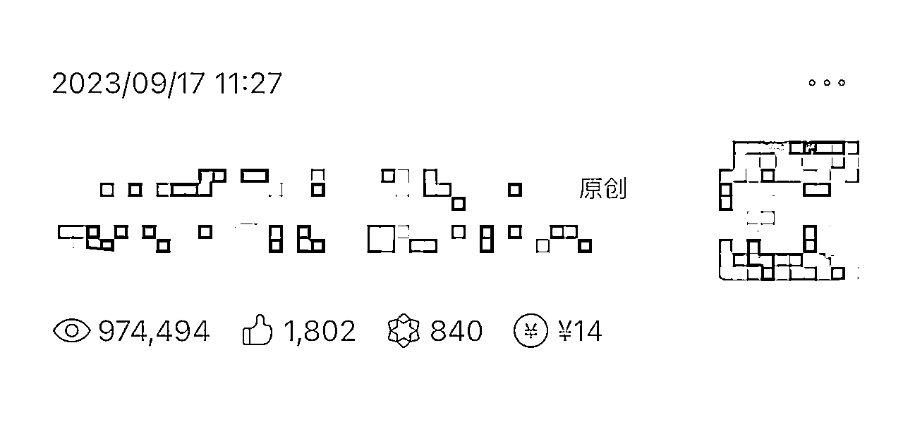
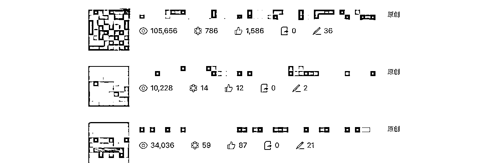
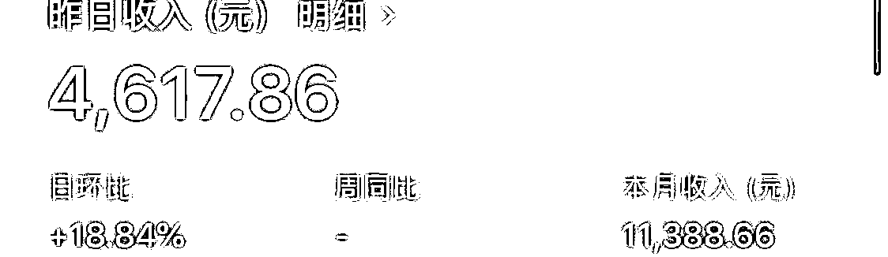
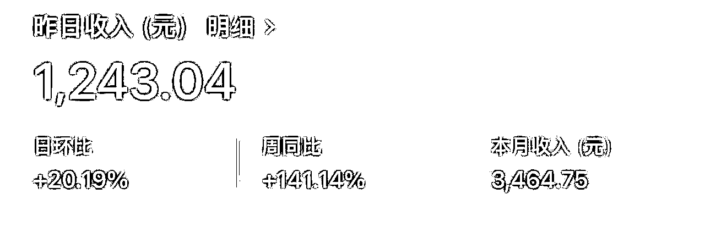
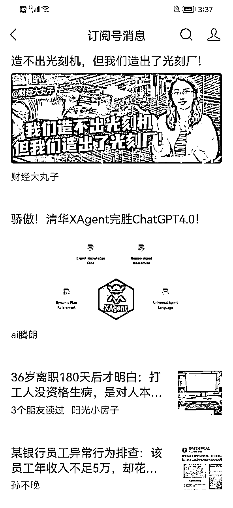
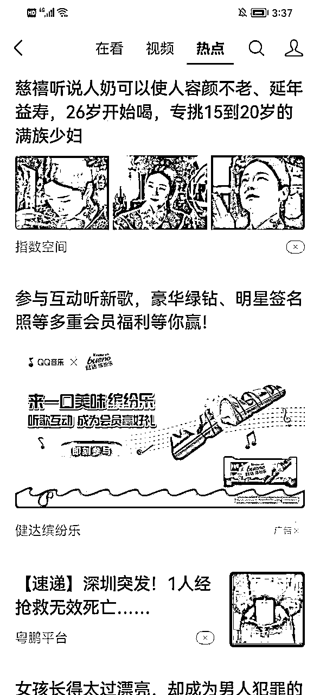
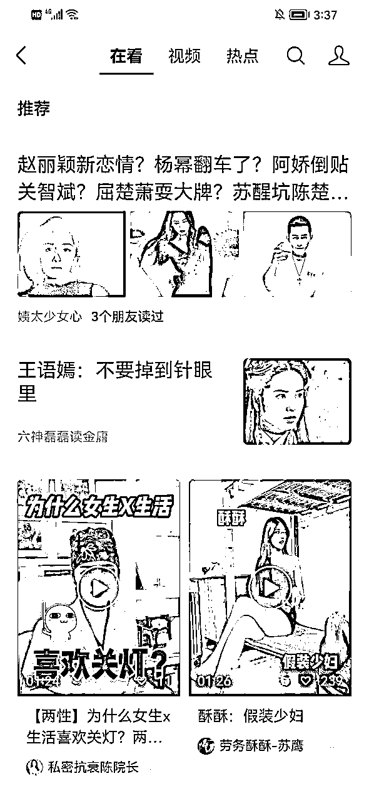
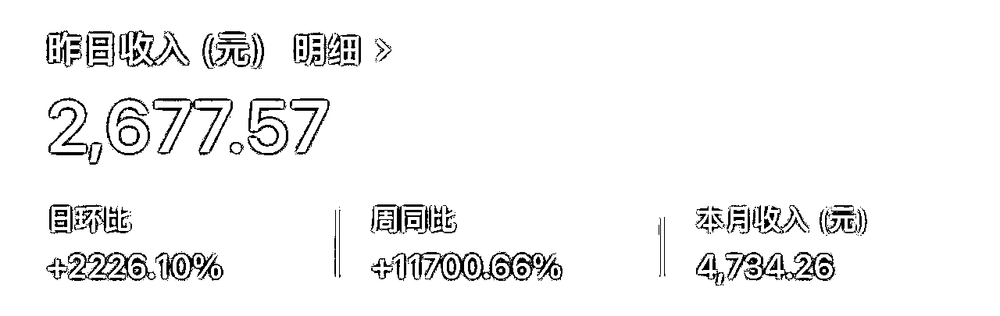

来源：https://wwg5hrbzkj4.feishu.cn/docx/Zywld2HB0oJdAmxaN9Scz14HnJc
2016年～2019年左右,微信公众号的文章传播仅靠已关注用户的订阅推送。这让头部大V们文章容易产生病毒式传播,而小号很难获得新用户。为什么许多创作者转而使用抖音快手等视频平台？
这就是一个典型的“弱肉强食”的例子。因为这个原因，许多创作者就开始转移到其他更容易吸引到观众的平台上。

我运营过10多个不同领域的公众号,对推荐算法有一些心得体会。推荐机制是平台的心脏，但它的算法细节通常是保密的。所以只能通过不断尝试，使用多个账号进行测试，才能摸索出一些规律。文章里面的部分收益图是我这2个月成绩。


为了改变这一局面,吸引更多优质创作者,微信进行了系列举措。大概从2020年开始，最大的一项就是从简单的订阅推送模式转变为智能推荐模式。这为文章创造了更广阔的传播渠道。

现在看公众号的群体不局限于中老年人了，青年的群体也是你的读者，具体来说,现在文章可以通过以下新渠道获得流量，可以分为主要推荐和额外推荐
主要推荐途径：
1.订阅号入口的看一看，偶然间我进来刷刷看，看到自己的文章，果然马上就推起来了，非常的迅猛。

2. 看一看。在这个信息流里面,优质文章更容易被推荐，这里显示热点，看到你的文章已经10w+，还会在这里继续推荐。

3. 朋友在看。当你的文章被朋友看过,也会以朋友在看的形式进行弱推荐。

4. 话题推荐。文章会被打上话题标签,在相关话题下获得曝光。
额外推荐途径：
1.搜索。用户可以在微信内搜索关键词,遇到相关质量好的文章。
2. 相关推荐。在其他文章底部会推荐相关的文章。
3. 账号推荐。公众号本身如果达到一定影响力,也会在各种场景获得推荐。
目前微信文章推荐主要来源是看一看信息流,这是一个类似微博的内容聚合渠道。其他如搜一搜话题等均来自看一看流量。所以如何进入看一看的信息流推荐是关键。

另外,在各类文章下方的相关推荐模块,也会根据内容相似性推荐其他文章。公众号主页下方也有订阅号推荐模块。这说明推荐不仅针对单篇文章,也会评估账号整体。
同一公众号下,有些文章持续获得高流量,有些仅偶尔爆款,这说明了推荐系统区分了文章推荐和账号推荐两种情况:
其他平台如抖音如果单个视频爆红,可以带动账号曝光度上升。但微信公众号则依赖账号综合实力,单篇噱头文难以改变账号运营态势。
那么,如何提高公众号被推荐的机会呢?关键在于提高账号的推荐权重。权重高就更容易进入推荐池获曝光。
进入平台推荐池被称为“进池”,系统会根据内容质量、账号影响力进行筛选。另外,账号标签也决定了被推荐的方向和频次。
有人又说光凭第一篇文章就迅速走红的案例非常少,属于“以偏概全”，需要关注的是如何持续稳定地获得高流量。
我们只能看到经过某种筛选过滤之后呈现出来的结果,却没有意识到背后存在筛选的过程。这样我们就忽略了被筛选掉的关键信息。
就好像你去超市买水果,你只看到货架上精挑细选的水果,而没有见过仓库里堆积如山的全部水果。你把超市货架上的水果当作所有水果,但实际那只是被筛选过滤过的一小部分。
我们在公众号平台也是这样，平台会用它们的算法对内容进行筛选推荐。我们看到的信息是被筛选出来的一小部分,而全部的原始信息我们可能无法看到。
所以在看待平台上的各种推荐信息时,要意识到存在筛选的过程,被筛选掉的内容也可能有价值。不要以偏概全,忽略了关键信息。
那么如何提高权重以进入推荐池?主要靠产出高质量原创内容。具体做法有:
第一,经常写原创文章很重要。原创的才容易获得平台认可,增加权重。注意别写黄赌毒这种敏感内容,要符合平台要求。
第二,文章内容要贴近用户兴趣和需要,增加趣味性和易读性。要专注一个领域,目标明确的用户群,不要东一榔头西一棒子的。
第三,多积累常回来看你文章的用户,增加粘性,这对提权重有帮助。也要适当回复用户问题,增加账号活跃度。
第四,试试A/B测试之类的方法,优化标题、文案啥的,提高传播效果。要及时抓住热点话题,作出相关文章。
第五,别只是跟风,要有自己账号的特色。
所以想在微信公众号稳定的高流量运营然后躺着赚钱,就需要持之以恒输出高质量原创内容,同时进行数据化测试优化,最大程度地激发用户兴趣,从而获得平台认可,实现账号权重提升和被推荐频次增加。这需要保持耐心和信心,付出持续努力。